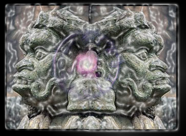
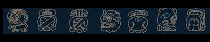

<html>


<!-- Mirrored from www.exitmundi.nl/Maya.htm by HTTrack Website Copier/3.x [XR&CO'2014], Mon, 28 Jun 2021 00:56:35 GMT -->
<!-- Added by HTTrack --><meta http-equiv="content-type" content="text/html;charset=UTF-8" /><!-- /Added by HTTrack -->
<head>
<meta http-equiv="Content-Language" content="en-us">
<meta http-equiv="Content-Type" content="text/html; charset=windows-1252">
<meta name="GENERATOR" content="Microsoft FrontPage 4.0">
<meta name="ProgId" content="FrontPage.Editor.Document">
<title>So the Maya's Were Right After All</title>
</head>

<body bgcolor="#000000" text="#FFFFFF" link="#00FFFF" vlink="#FF00FF">

<p align="center"></p>
<blockquote>
  <p ALIGN="center"><font face="MS Sans Serif" color="#FF9900" size="4">Will it
  be the end of everything? Or will it be the dawning of the age of Aquarius? No
  one really knows. One thing's for sure, though. December 21st of the year 2012
  is the day time as we know it will end.</font></p>
  <font FACE="Courier New"></font>
  <div align="right">
    <table border="0" align="right">
      <tr>
        <td width="100%"><script type="text/javascript"><!--
google_ad_client = "pub-5046374505441754";
google_ad_width = 120;
google_ad_height = 600;
google_ad_format = "120x600_as";
google_ad_type = "text_image";
google_ad_channel = "";
google_color_border = "FFFFFF";
google_color_bg = "FFFFCC";
google_color_link = "0000FF";
google_color_text = "000000";
google_color_url = "008000.html";
//--></script>
<script type="text/javascript"
  src="../pagead2.googlesyndication.com/pagead/f.txt">
</script></td>
      </tr>
    </table>
  </div>
  <p ALIGN="left"><font face="MS Sans Serif">So at least claim the Maya's, that
  ancient civilization that lived in the Mesoamerica's since 2,600 BC. The
  Maya's had an extremely complicated method of keeping track of time, based on
  three separate calendars. The most important, most encompassing of these calendars
  holds the `Long Count': the period from the beginning until the end of time.
  And on December 21st 2012, the Long Count expires. It will be point zero. Time
  will be up for the Universe. It will be, literally, the end of days.</font></p>
  <p ALIGN="left"><font face="MS Sans Serif"><font color="#FF9900">Big deal, you
  might say.</font> Still, there's a couple of very interesting (and disturbing)
  facts about the Maya calendar's end. Most intriguing, 21-12-2012 is not a day
  like any other. Up in the sky, an extraordinary and incredibly rare event will
  take place. The Sun will move to a unique spot in the sky -- and hold still
  for a while, since it is solstice day. The Sun will sit precisely on the
  heavenly crossroads between the Milky Way and the galactic equinox, forming a
  perfect alignment with the center of the galaxy.</font></p>
  <p ALIGN="left"><font face="MS Sans Serif">Er... what?</font></p>
  <p ALIGN="left"><font face="MS Sans Serif">Well: the night time sky is crossed
  by several mathematical lines. One is the axis of the Milky Way -- the Milky
  Way, as you may know, being that bright band of stars you can see running across
  the heavens on a clear night. Another important line is the cosmological
  ecliptic: the axis along which the constellations travel, the line that
  defines coordinates in space.</font></p>
  <p ALIGN="left"><font face="MS Sans Serif"><font color="#FF9900">You
  can say a lot about the Maya</font>, but you've got to hand it to them: they
  knew a hell of a lot about stars. For instance, they calculated the exact
  duration of a year to a thousandth of a decimal point, much more precise than
  any Greek or enlightened philosopher ever did. Also, they were able to predict
  every solar and lunar eclipse until this day. And obviously, they knew where
  the galactic equinox and the exact middle of the Milky Way lay: they called
  this crossing `the Sacred Tree'.</font></p>
  <p ALIGN="left"><font face="MS Sans Serif">More disturbing, the Maya's were
  awfully good at astrology, too. Mysteriously, they predicted in what year
  their civilization would be overrun by foreigners coming from over the seas.
  Legend has it they even predicted the world wars. So if a Maya tells you the
  world will end in 2012, you'd better take it seriously.</font></p>
  <p ALIGN="left"><font face="MS Sans Serif"><font color="#FF9900">But actually</font>,
  the Maya's never predicted anything concrete about 2012. That may have
  something to do with our ill knowledge about Maya culture: when the Spanish
  ransacked the land, they burnt literally every Maya book they could find. Only
  a handful of scriptures survived. And in them, there's not a clue about what
  happens when the Maya calendar ends.</font></p>
  <p ALIGN="left"><font face="MS Sans Serif">So what awaits us in 2012 basically
  is an open question. And as with so many open questions, countless doom
  preachers, semi-prophets and other crackpots pop up to provide an answer. The
  interpretation you hear most: 2012 will mark the coming of a new, glorious age
  of wisdom and peace. It will be Age Of Aquarius at last, with a world full of
  peace, love and understanding.</font></p>
  <p ALIGN="left"><font face="MS Sans Serif">The reasoning behind this is
  actually not
  that stupid. The Maya's didn't really believed in endings: their
  conception of time was circular, with every end being the beginning of
  something new. So, 2012 shouldn't be an exception.</font></p>
  <p ALIGN="left" style="line-height: 100%"><font face="MS Sans Serif">Also, the
  Maya's had a highly developed philosophy of the cosmos. They saw the cosmos as
  the true mother of things. Consequently, the Maya's thought the cosmos is all
  around us, and within us. Every plant, every animal, every man is sheer
  Cosmos.</font></p>
  <p class="MsoNormal" style="line-height: 100%; tab-stops: -72.0pt -36.0pt" align="left"><span lang="EN-US" style="letter-spacing:-.15pt"><font face="MS Sans Serif"><font color="#FF9900">So,
  New Age philosophers say</font>, December 21st 2012 will be the day on which
  this inner cosmos is reconnected to the divine outer cosmos. The Sun will
  mount its unique position to<span style="mso-spacerun: yes">&nbsp; </span>form
  a `gateway' between the Universe and the souls of every living creature on
  Earth. Our linear conception of time will crumble, and with it, fear and
  hatred will vanish. It will be purification at it's very best, when everyone
  is soaked in cosmic understanding and divine love.<o:p>
  </o:p>
  </font></span></p>
  <p class="MsoNormal" style="line-height: 12.0pt; tab-stops: -72.0pt -36.0pt" align="left"><span lang="EN-US" style="letter-spacing:-.15pt"><font face="MS Sans Serif">So
  there it is: on December 20th, you'll kick your dog, yell at your spouse and
  cheat on cards. But a day later, you'll be calmed down into a peaceful dude
  with nothing but love and understanding to guide you in life. Even though it's
  mid-winter, it'll be summer of love for all humanity.<o:p>
  </o:p>
  </font></span></p>
  <p class="MsoNormal" style="line-height: 12.0pt; tab-stops: -72.0pt -36.0pt" align="left"><font face="MS Sans Serif"><span lang="EN-US" style="letter-spacing:-.15pt"><font color="#FF9900">Other
  doomsayers foresee doom and destruction.</font> December 21st will be the
  day the Earth will be destroyed. Some think it will be because of some <a href="nukes.html"> nuclear
  war</a>, some say it will be because it's <a href="bijbel.html"> biblical judgment
  day</a>. Even others take
  the ending of the Maya calendar more literally, and claim the Universe will
  just cease to exist. </span><span lang="NL" style="letter-spacing:-.15pt;mso-ansi-language:NL">Zzzzp!,
  gone.<o:p>
  </o:p>
  </span></font></p>
  <p class="MsoNormal" style="line-height: 12.0pt; tab-stops: -72.0pt -36.0pt" align="left"><span lang="EN-US" style="letter-spacing:-.15pt"><font face="MS Sans Serif">There's
  something to be said in favor of such sinister scenario's, too. The Maya
  divided their Long Count into five lumps of time, called Great Cycles. And
  every cycle had a well defined end. For example, after period number one, a
  Jaguar came by and ate everyone on Earth. Well, it's the Maya saying this, not
  me!</font></span></p>
  <p class="MsoNormal" style="line-height: 12.0pt; tab-stops: -72.0pt -36.0pt" align="left"><span lang="EN-US" style="letter-spacing:-.15pt"><font face="MS Sans Serif">The
  second cycle ended in air, the third in fire, the fourth in flood. And what
  about the last period, the stretch of time we're in? The Earth will be
  destroyed by earthquakes, is the interpretation some scholars give to the
  etchy-sketchy remains of the Maya culture. That needs emphasizing, because the
  last word on Maya timekeeping isn't said yet: almost every year new books on
  the issue are published.</font></span></p>
  <p class="MsoNormal" style="line-height: 12.0pt; tab-stops: -72.0pt -36.0pt" align="center"><span lang="EN-US" style="letter-spacing:-.15pt"><font face="MS Sans Serif"><o:p>
  </o:p>
  </font></span></p>
  <p class="MsoNormal" style="line-height: 12.0pt; tab-stops: -72.0pt -36.0pt" align="left"><span lang="EN-US" style="letter-spacing:-.15pt"><font face="MS Sans Serif"><font color="#FF9900">So,
  what are we to make of it all?</font> Will it be time's up in 2012? Well: we
  at Exit Mundi wouldn't bet on it.<o:p>
  </o:p>
  </font></span></p>
  <p class="MsoNormal" style="line-height: 12.0pt; tab-stops: -72.0pt -36.0pt" align="left"><span lang="EN-US" style="letter-spacing:-.15pt"><font face="MS Sans Serif">Don't
  forget: there are many, many religions predicting some kind of end to the
  world. And the Maya prediction attracts a lot of attention now, merely because
  their end date is so well-defined, and because the Maya Deadline is only a
  couple of time-ticks away.<o:p>
  </o:p>
  </font></span></p>
  <p class="MsoNormal" style="line-height: 12.0pt; tab-stops: -72.0pt -36.0pt" align="left"><span lang="EN-US" style="letter-spacing:-.15pt"><font face="MS Sans Serif">And
  what about that awesome phenomenon of the Sun sitting in the heart of the Tree
  of Life? Well, that happened before. The Sun passes the Tree every 25,800 years.
  That's a lot of years, but since the Earth exists for an astonishing 4,5
  billion years, the Earth survived the `divine event' more than 150,000 times
  already!
  </font></span></p>
  <p class="MsoNormal" style="line-height: 12.0pt; tab-stops: -72.0pt -36.0pt" align="left"><span lang="EN-US" style="letter-spacing:-.15pt"><font face="MS Sans Serif">What's
  more, the last six times the phenomenon occurred, modern humans already walked the planet.
  Obviously, it
  didn't have much effect on our spiritual lives. It certainly didn't
  stop the Spanish from butchering some 800,000 Maya's in the sixteenth century.<br>
  </font></span></p>
  <div align="center">
    <center>
    <table border="0" width="728" height="90">
      <tr>
        <td width="100%"><script type="text/javascript"><!--
google_ad_client = "pub-5046374505441754";
google_ad_width = 728;
google_ad_height = 90;
google_ad_format = "728x90_as";
google_ad_type = "text_image";
//2007-01-16: kustblauw plat
google_ad_channel = "4730799746";
google_color_border = "336699";
google_color_bg = "FFFFFF";
google_color_link = "0000FF";
google_color_text = "000000";
google_color_url = "008000.html";
//--></script>
<script type="text/javascript"
  src="../pagead2.googlesyndication.com/pagead/f.txt">
</script></td>
      </tr>
    </table>
    </center>
  </div>

  <p><!-- End Webstats4U code -->
  </p>
  <p align="center"><font size="2">All texts Copyright © Exit Mundi / AW Bruna
  2000-2007.<br>
  You're not allowed to copy, edit, publish, print or make public any material
  from this website without written permission by Exit Mundi.</font></p>

  <p class="MsoNormal" style="line-height: 12.0pt; tab-stops: -72.0pt -36.0pt" align="left"><span lang="EN-US" style="letter-spacing:-.15pt"><font face="MS Sans Serif"><o:p>
  </font></span></p>
</blockquote>


<!-- Mirrored from www.exitmundi.nl/Maya.htm by HTTrack Website Copier/3.x [XR&CO'2014], Mon, 28 Jun 2021 00:56:41 GMT -->
</html>
